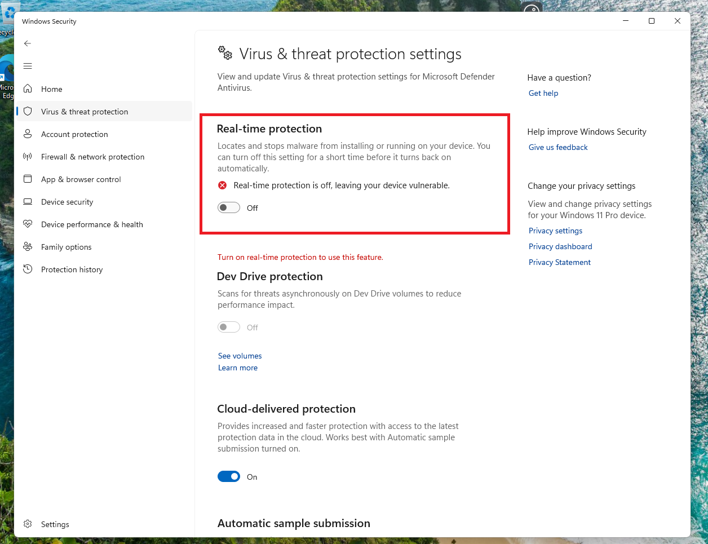

Make the Windows 11 UI usable! Here's how!
Windows 10 is ending support. You don't want to use Windows 10 IoT Enterpise LTSC 2021 or stay on an unsupported Windows 10 22h2 install. Linux isn't an option. You also don't want to deal with the Windows 11 UI that might seem bad in your opinion. I share that opinion, so let's fix it! Both methodes wont affect your perfomance at all!
Method 1: StartAllBack (NOT sponsored!)
StartAllBack is a paid tool that gives you a nice start menu and taskbar. It costs 5€, which is a good price. It offers a free 100 day trial, which is great! Download it using the website.

Then, run the installer.

Next, Explorer will restart and the start menu and taskbar will look like this:

Now we will configure it to make it perfect. Right click the taskbar and click properties. The welcome section will appear. I prefer the Proper11 skin (the default one)so I will select that but you can select what you want.

There are a lot of options to customize the taskbar. You can choose to make it small and set it at the position you want. You can also unlock the taskbar and drag it where you want it to be like you used to do on older versions of Windows.


Next, let's fix the File Explorer. I prefer the Win10 Ribbon UI so I will select that.

Now, it looks like this:

This is what the result looks like:

And of course, it supports dark mode too!

The context menu looks really nice on my main system!

To activate StartAllBack, buy a key on the website and enter the key in this window:

Method 2: ExplorerPatcher
ExplorerPatcher is a tool that restores the Windows 10 taskbar and startmenu. It does a great job, but the recent Windows 11 updates might cause it to be more buggy then StartAllBack, so proceed at your own risk. You can download it from the GitHub repository. Make sure to always download the latest version!

Your browser and Windows Defender might block ExplorerPatcher, but it's fully safe and trusted by many people inside the Windows Community. I had to disable defender to install it. After installing it, you can re-enable Defender.
After installing it, you'll see a new shortcut in your Start Menu to comfigure Explorer Pather.

Now, the ExplorerPatcher window will show up. By default, the taskbar is set to Windows 10, which isn't supported on Windows 11 anymore after recent updates.

Thankfully, there's a Windows 10 (ExplorerPatcher) option which will work.

Next, let's change the start menu. I will make sure to set the Start menu to open at the edge of the screen.

Next, we will fix the File Explorer.

And finally, let's restart Explorer for the changes to take effect.

Now, we have the Windows 10 taskbar and start menu!

You can also set the taskbar to the position you want. Unlock the taskbar by right clicking and drag it where you want.


And this is the result.

It supports dark mode as well!

I hope this will help you fix your issues with the Windows 11 UI. Thank you for reading!